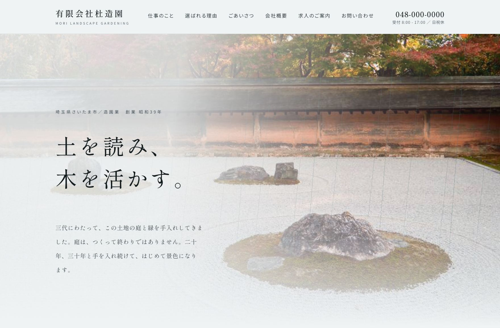
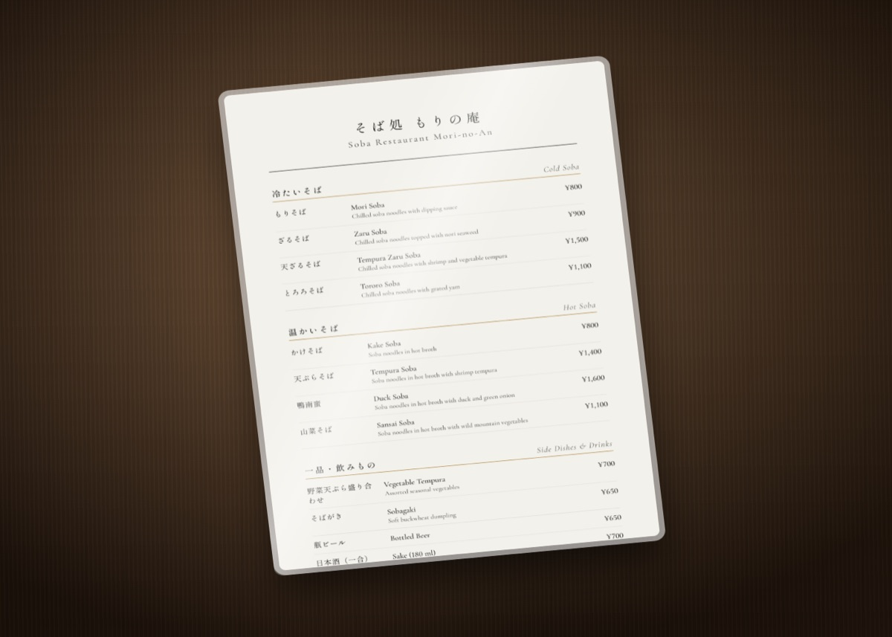
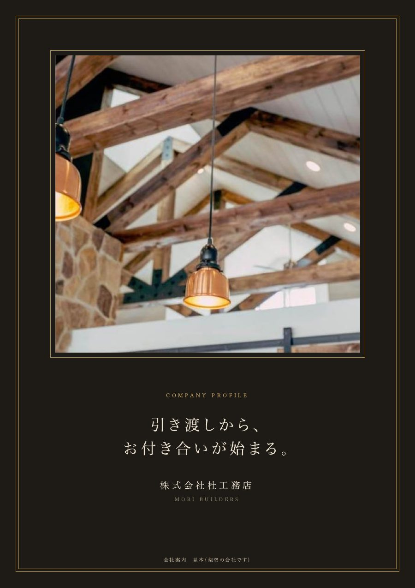
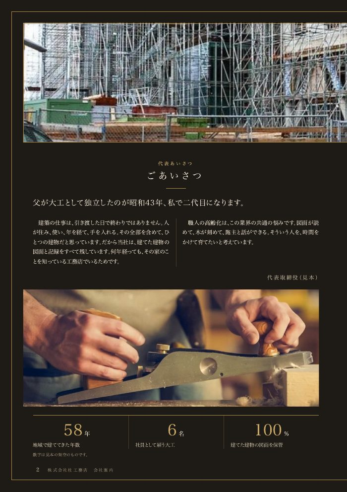

01 / NEW WEBSITE
ホームページ新規作成
会社のことが、きちんと伝わる。
仕事内容や実績、得意なことを1ページに。24業種・5つのデザインから選べます。
98,000円（税込）
MORIKOSHA / DESIGN & DIGITAL CRAFT
会社の強みも、お店のこだわりも。
必要としている人に届く、かたちへ。
ホームページ・多言語メニュー・会社案内。
忙しい日々の「伝える仕事」を、杜工舎が引き受けます。
さいたま市のデザイン・制作工房 ／ 代表 上原 光瑛


01 / WHAT WE MAKE
画面で伝える。紙で手渡す。言葉の壁を越える。
必要なものから、無理なく始められます。

01 / NEW WEBSITE
会社のことが、きちんと伝わる。
仕事内容や実績、得意なことを1ページに。24業種・5つのデザインから選べます。


02 / WEBSITE RENEWAL
積み重ねた仕事を、新しい佇まいへ。
いまの文章や実績を生かして、読みやすく。古いホームページの改修前後を見比べられます。

03 / MULTILINGUAL MENU
おいしさの入口に、言葉の橋を。
日本語メニューの写真から、英語を併記した一冊へ。お店の雰囲気に合わせて整えます。


04 / COMPANY BROCHURE
仕事の輪郭を、手渡せる一冊に。
会社の強みと仕事を、写真と言葉で整理。ホームページと同じ五つのデザインから選べます。
公開設定代行は別途48,000円（税込）。サーバー・ドメイン利用料はお客さま負担です。
商品の選び方を案内する商品比較サイトも制作しています。

02 / OUR APPROACH
いい仕事をしていても、それを伝える時間が取れない。杜工舎は、そんな会社やお店のための、小さな制作工房です。
お話や資料から、伝えるべきことを整理する。写真と言葉を整え、使える道具に仕上げる。代表が窓口となり、内容の確認からお渡しまで進めます。
県庁の土木技術職として8年間、そして現在の農業の現場で見てきた、仕事の積み重ね。その価値を伝えることを大切にしています。
代表と仕事の進め方03 / HOW WE WORK
何を用意するか、どこまで含まれるか。
ご依頼の前に、一緒に確認します。
メール、お打ち合わせ、ご記入シート。ご都合のよい方法で、仕事やお店のことをお聞かせください。
見本をもとに文章と写真を整え、資料が揃ってから約2週間でお渡し。数字や固有名詞も確認します。
内容をご確認いただき、データをお渡しします。お渡し後2週間以内の修正は1回まで無料です。
掲載している制作物は見本です。実在のお客さまの実績として掲載する際は、ご承諾をいただきます。
LET’S TALK
会社やお店のこと、いま困っていることをお聞かせください。